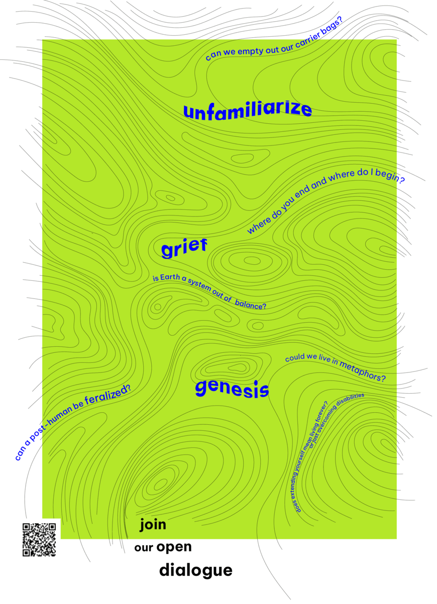
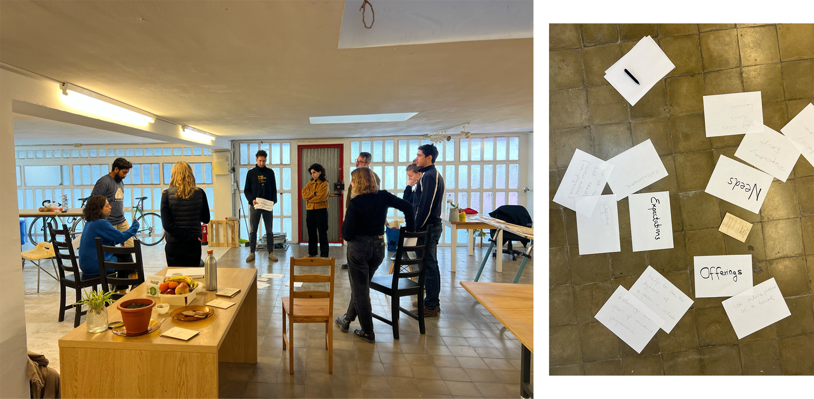

practising
open dialogue¶

conference¶
imaginar mundos posibles: Potencialidades, límites y fricciones de la ficción especulativa en la investigación y la educación
our paper - introduction¶
Story-taling
January 19th and 20th, 2023
Keywords: storytelling, speculating futures, decentering, diversifying narratives
“Nobody lives everywhere; everybody lives somewhere. Nothing is connected to everything; everything is connected to something” – Donna Haraway
Even though we live in the age of information and polyphony, few voices are being noticed; few stories are being created. This paper reflects on the importance of creating and listening to stories. Our research focuses on the articulation of fictional narratives that allow to go beyond monophonic and catastrophic narratives. Stories are fiction and they are not; they are speculation yet inherently bear reflection. Anna Tsing talks about stories as forms of “attunement” to the worlds we find ourselves in, which means we have agency to make decisions: What stories do we listen to? What channels do we use to tell and who is telling? With this research, we aim to develop a method that helps diversify narratives about the future by providing space and showing possibilities for storytelling. We see it as important to diversify narratives by transgressing the monophony of imagining the future. This seems possible through democratizing storytelling by pointing out that everyone is capable of telling stories and asking questions – we are active agents who can question narratives and imagine alternatives. Speculative fiction appears as a tool that can be learned and practiced.
Based on Timothy Morton’s concept of a “mesh” that represents the interrelations between human and “nonhuman” realities, we propose to use a mapping technique that decenters the self and creates space for entangled narratives to evolve. The mapping involves the overlay of individual observations of the relations between (non-human) agents in a given space. In the course of this process, a “mesh” emerges and participants are encouraged to speculate about fictional scenarios that play out in this “web of life”.
cartographies¶
our plan with Stella here was to visit a specific ecosystem and create some collective mappings of the actors and their interactions. we could not define it more specifically even if we did some more practical research so our initial plan has not worked so far. We visited Oscar’s place, which is his personal research laboratory· he lives with some 200+ plants and he has built a whole light and water system to make it as autonomous as possible. it sounded like an interisting ecosystem and we planned to go in mid January, Our intention was to collectively was out interesting power dynamics that we experienced but also insights we would get from Oscar as the main actor.
We ended up talking about the project for some hours and recorder our conversation so that we could listen to it more carefully and possibly create our individual mind maps while listening to the record, and then join them in one. This way, we could visualise the content and have an overview of the story he described to us, and therefore continue from that point on.
our plan with stella here was to visit an ecosystem and create collective mappings of the actors in the system and their interactions. we couldn’t define it much more precisely at the time and although we did some practical research, our plan didn’t work out exactly. We visited Oscar’s house, which is also his personal research lab; he lives with about 200+ plants and has built an entire lighting and water system to make it as self-sufficient as possible. Our intention was to collectively document the power dynamics, both from our experience and from Oscar himself as the main actor of the system.
We ended up talking about the project for a few hours and recorded our conversation, in order to then listen to it carefully and create a mind map from this audio. so we listened to it individually, and then put them together into one map. That way, we could visualize the content and get an overview of Oscar’s story.., and then go on from there.

workshops¶
Currently this is our main attempt to test, apply and collect information for our reseearch topics. Since the topics and also under constant reframing, I will again sum them in the folowing·
creating fictional narratives about the future of education and focusing on the transition processes
first iteration: 25/4¶

storyline
First workshop 25th of February 2023, Barcelona, sun is shining, 10 degreed Celsius.
It is a Saturday morning; we are meeting in the studio of our friend and mentor Jana in Raval.
We have invited for 11 o clock, by 11:30 we are all together, had some tea and fruit and are coming together to stand in a circle. A short introduction round makes us realize the bubble we are in.
Amanda from the States, a MDEF student who is interested in the creation of a makerspace and who loves the self-sufficiency of coding- and electronics. Maria from Italy, who is one of the inviters roommates and works in the social sector with people with disabilities. Nithin from India, who works at Glovo as a UX expert and who is writing his master thesis on speculative-, transition-, and pluriversal design. Korbi from Switzerland, who is a MDEF Master student and concerned with the exploitation of the labor force and the search for new ways to life without work. Georgio from Switzerland, who is his friend and curious to pass by. Daphne from Greece, who is an ex-MDEF student and after finishing a few years ago continued her journey in future design dealing with system and imaginations of speculating. Quim from Spain, who is a geography professor and artist in Lleida and has various practices that deal with the interaction of space and learning processes. Jana from spain, who is an ex-MDEF student and is interested in transhumanistic ways of thinking and designing. Claudia from Italy, who is a MEDF student and is interested in the change of social behavior towards a more conscious consumption of resources. And the two facilitators Myrto and Stella from Greece and Germany, who are MDEF students and interested in disrupting binary thinkings and exploring polyphonic narration. All in all, we are between 24 and 40 years old, white and somewhat linked to the topic of the invitation – the educational system and how it is changing.
Before introducing the topic and goal of the day, we are asked to close our eyes and settle into our body and into the space we are in. A few guided breathings and we open our eyer again to meet each other in concentration and curiousness. The next few hours will be guided along three phases of transition – we will unfamiliarize, grief, and rebirth by the help of three exercises. We will be dealing with a transition that is happening and that we all have experienced somehow close or far – the switch from solely in-person learning and teaching to hybrid forms that come with the introduction of the internet and globally accessible platforms that enable online and live exchanges. We divide into three groups, taking in the perspectives of either teachers, students, or means of communication. Within the groups we discuss and dialogue about what the above mentioned transition would mean for our position, what would change practically and how would it affect our position emotionally?
After about half an hour, we meet with the other groups in a standing circle and each group presents its burning issues. A discussion starts to evolve. It seems difficult to argue from the group’s perspective and participants often appeal to their personal interests. For example, does Quim, who choose to represent means of communication, easily fall back into his actual role as a university professor and argues for the perspectives of the teacher. For the students, who all were students at one point in their lives (in this case not even very long ago and mostly still are), the participants refer to lived experiences. A discussion about the differences in legal regulation and the lack of digital skills arises. Soon all three groups agree on the current goals and deficits, which are not compatible with each other.
We go into the next phase; After having unfamiliarized with what is known by taking in new perspectives and seeing what else there is at play, we continue into the grieving part. In the same groups we are asked to discuss what heritage we want to pass on, what essential qualities of the roles should not be forgotten but will eventually be something that is no longer practiced. For this phase the facilitators have calculated less time and after 20 min bring back the circle and we exchange the values we will be missing. This leads to a mapping of all the values that seem essential for learning and teaching, even in a digital future. Here, too, personal experiences, fears and desires are referred to and inspire our thoughts and words.
Someone mentions the potentiality of hybridness and starts drawing a scenario in which these values can be kept while allowing digital spaces to take over (some of) the physical learning places. We are slowly transitioning into the third phase our day – the rebirth. Each on themselves now writes down three scenarios on three different papers without disclosing their headings: one desirable future that’s possible, one undesirable future that’s plausible, and one desirable future that’s impossible. The studio with the low ceiling and the cold windows falls silent. We hear the pens on the paper, the teeth biting lips. When the facilitators announce five more minutes there is revolt, there is need for more time.
Then we come together and place all our scripts face down on the floor in the middle of our standing circle. One by one we pick up a paper and read out loud what is written on it. Then we decide together if this is something we can imagine in a future education system that has made the transition from exclusively personal learning. There is a lot of movement now, we stand still, but there is laughter and discussion about all kinds of related implications. We discard the papers that are not wanted in our model and in this way build up a stack of propositions describing (parts of) an educational system that we would like to learn and teach with. A third stack of papers is the place for all the scripts we are not so enthusiastic about. The ones where we don’t really know whether to give them a chance or discard them straight away.
After three rounds, and many repetitions of readings, the floor in our midst is empty again. It is getting late, and as the participants have to leave at 2pm, we are led again into a closed-eye breathing, to ourselves and the space, before some words of gratitude end the session for the day. People leave slowly, some stay, eat some more fruit and share their experiences.
critique
After letting some time pass, we look back with a more critical eye on our experience.
.. what we were expecting to happen vs what actually happened?
.. what would we do differently next time?
.. what we would like to maintain?
…?
to have some structure here we will first identify all the actors, then reflect on each one of them but also in the togetherness:
facilitators (us)
tools (cards, pens and papers)
physical space (Jana’s studio)
day and time (Saturday 11am)
topic of discussion(online education)
workshop format
participants
The group of people we managed to gather was good in terms of size for such a collective process. The so-called ‘diversity’ was there and there was not. We somewhat had different backgrounds, different ethnicities, lifestyles etc but in regard to the topic we were more or less aligned. Our generations were also quite close so we had no representative of an ‘extreme’: a person who never used video for education or a person who never experienced education without it. In terms of social interaction, there was no representation of people with any kind of ‘social disorders’. we also noticed a lack of imagination beyond rational thinking, but maybe this part was due to our handling.
facilitators
We were (are) new in organizing and instructing workshops so we didn’t spend too much time preparing it, since it was our first experiment. Also we were not really able / we didn’t want to forcefully guide it to a certain direction since we hadn’t specified our goals. We were going with the flow, taking care of the place and our invitees. We didn’t take risks nor improvisations, so maybe next we try out something more radical.
Also on my personal side, I wasn’t able to take a more active communicator’s role especially in the beginning for whatever reasons (!) but I will do try better next time.
tools
The instructions cards we had prepared with the laser cutter were pretty but for the use we needed them, not so functional. They were not readable from a distance and not enough to give a pair to each group or individual. As for the participant’s inputs, it was mostly verbal so pens and papers were more than enough. Maybe next time if we try a more multimedia creation, we can try more tools like paintings, recorders, ipads,…
space
I think we were all quite happy with the place. Very convenient location (especially for me hehe), nice atmosphere and very hosbitable environment. The space had everything we needed or might need in the future. moving tables, kitchen, bathroom, even a small fab lab. Also people were working in the background, which added an interesting co-living aspect.
day and time
worked well. Saturday people usually don’t work and it was not too early (so that people could rest after Friday evening), not too late (so people could still enjoy their Saturday afterwards). the duration maybe was a little too long, especially the last part. It wouldn’t have been a problem if it had lasted more because people were engaging, but in our case it lasted because we had to ‘finish’ reading and categorizing all the cards..
topic of discussion
The transition from an in-person education to an online format was a topic we thought is good because everyone had some experience. The problem is, it has already happened. It is still changing of course but it’s too much of our reality to trigger interesting, speculative, fictional discussions about an unknown future. Pretty much, the hybrid form we overall agreed on is part of our daily lives already.
workshop format
The creative part was somewhat sidelined. We exchanged / shared our visions but we left it there. I would have liked to collectively ideate, using our individual visions as a starting point and together come up with narratives that no one had already in mind before coming to the workshop.